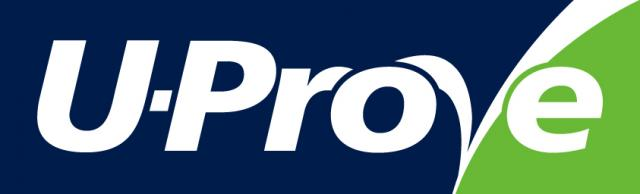

Microsoft U-Prove Technology Featured at Privacy Identity Innovation 2010
Seattle WA – September 27, 2010 – Last month, at the Privacy Identity Innovation 2010 conference in Seattle, Microsoft Senior Program Manager Christian Paquin hosted a session on the U-Prove minimal disclosure technology. ICF Executive Director Drummond Reed interviewed Christian for the following in-depth Q&A about U-Prove.
Q: First, can you tell me what is U-Prove?
A: U-Prove is an innovative privacy-enhancing security technology that can help people protect their identity-related information. U-Prove combines the security of PKI (public key infrastructure) with the flexibility of federation technologies that allow people to link identities across domains. And it does all this while providing privacy-by-design. That makes the U-Prove technology ideally suited to protect claims (attributes) in user-centric identity systems.
Q: Microsoft made a major announcement about U-Prove at RSA in March. What was the essence of that announcement?
A: The initial release of the U-Prove technology we announced at RSA consisted of two parts. First, we released the U-Prove specifications, published under the Open Specification Promise (OSP), so anyone can implement and use them freely and for any purpose. The first specification describes the core cryptographic protocols, and the second is a WS-Trust / OASIS IMI profile (the protocol used for Information Cards). We also released two open-source Software Development Kits (SDK) – one in C#, one in Java – implementing the core cryptographic specification.
Second, we released a U-Prove Community Technology Preview (CTP), which demonstrates how the technology integrates within the Microsoft Identity Platform. Specifically it consists of modifications to Windows CardSpace 2.0 (beta), Active Directory Federation Services 2.0 (AD FS 2.0), and the Windows Identity Foundation (WIF) to support the U-Prove technology.
Q: What was the reception?
A: The reception was quite positive, especially within the privacy community. The release of the specifications under the OSP was widely applauded. Later in the spring, analyst firm Kuppinger-Cole honored U-Prove with the European Identity Award for “Best Innovation”. (ED: see the ICF report in this blog post.)
Quite a bit of interest has followed, especially in the e-government space. Customers and partners are learning about the technology and discussing with us how U-Prove technology can be incorporated in various architectures and identity frameworks.
Q. What parts of U-Prove have not been released by Microsoft yet?
A. The U-Prove technology offers a large set of features, most of which are described in the MIT Press book Stefan Brands published ten years ago. Not all of them have been implemented yet. What have been released are the foundational parts of technology. There is a list of unimplemented features in the CTP white paper; we are looking for feedback from customers and the community to help us prioritize them.
Q: Can you summarize the essence of the innovation that U-Prove represents in cryptography?
A. Balancing the security, privacy, and scalability requirements of identity systems is challenging, especially when designing Internet-scale systems. Often, these are seen in opposition, and there is a belief that you can’t achieve all of them at the same time. For example, it’s difficult to imagine how your privacy is protected when you are always identified, or how you can provide accountability when users are anonymous.
Conventional technologies, such as PKI and federation protocols, are often forced to make trade-offs between these requirements. For example, PKI certificates leave behind a digital “fingerprint” whenever they are used (the certificate’s public key is a unique value always disclosed). On the other hand, federation protocols provide a lot of flexibility but lose some security (no private keys) and scalability (you always need a connection to an identity provider, which makes them an attractive target for denial-of-service attacks).
U-Prove avoids these tradeoffs, i.e., it is designed to provide strong security, privacy, and scalability. It does this by defining a new kind of security token for minimal disclosure.
Q: How specifically does U-Prove provide minimal disclosure?
First, U-Prove tokens do not contain unique correlation handles. Nothing in the cryptographic fabric can be used to link the issuance and the presentation of these tokens. As an analogy, conventional PKI certificates are like dollar bills, each having its own unique serial number (e.g., the public key) that can be used to track them. In contrast, U-Prove tokens are like coins — anyone can verify their validity, but they are indistinguishable and untraceable, even if a bank and merchant collude.
Second, for a particular transaction, a user can disclose properties about the claims encoded into a U-Prove token without revealing all the information within it. For example, a user could disclose a subset of the encoded claims, or prove that she is over the age of 21 without disclosing her date of birth, or prove that her name is not on a revocation list without actually disclosing her name. These capabilities are not possible with conventionally signed PKI certificates and SAML assertions.
Thirdly, U-Prove tokens can be obtained in advanced from the identity provider and presented to service providers without connecting back to the identity provider. This not only further enhances privacy—the identity provider does not know where you are using the token—but it reduces the real-time load on the identity provider’s system and therefore increases scalability.
Q. Is that related to the “slider” you mentioned in your presentation?
A. Yes. The idea is that different identity scenarios have different security, privacy, and scalability requirements. Since U-Prove technology provides a superset of features offered by conventional PKI and federation technologies, it offers a set of “sliders” that an architect or system designer can control in order to use U-Prove to meet the specific requirements of a scenario or environment.
For example, U-Prove protected claims can be issued on-demand or in advance, can support minimal or full disclosure, can be software- or hardware-protected, and can be presented anonymously, pseudonymously, or with full identification. In short, U-Prove provides one multi-purpose “building block” to use for security and privacy architecture, whatever the solution requires.
Q. You mentioned SAML and PKI, is U-Prove meant to replace these technologies?
A. No. U-Prove is a core cryptographic technology that can be used to complement PKI and federation technologies such as SAML. U-Prove is independent of the integration environment. We released a WS-Trust/IMI (Identity Metasystem Interoperability) profile that specifies how to use U-Prove with Information Cards, but you could easily write a PKI or SAML profile that specifies how to use U-Prove to extend these technologies.
In fact, a key point of the Identity Metasystem is to enable different token types to co-exist in the same environment. For example, you could setup a Security Token Service (STS) to receive U-Prove tokens (to protect the user’s privacy) and seamlessly translate them into SAML tokens (for legacy systems).
Q. You mentioned protection from collusions between identity providers and service providers. What did you mean?
A. I said that U-Prove privacy properties are guaranteed against the strongest threat model, even if we assume that all parties collude to break the user’s privacy.
For example, suppose an identity provider sends a claim that you are over the age of 21 using a SAML token. While the token’s attribute values might not identify you, the token’s XML will in fact do that (it contains many correlation handles, including a unique identifier and issuer signature). It then becomes trivial for a service provider and an identity provider to collude to figure out the real identity of the user.
With U-Prove’s cryptographic protections, these correlation handles do not exist. Therefore you cannot link the issuance of the token from the identity provider with its presentation to the service provider. The only thing that the colluding parties can conclude is that the user is someone from the set of users of an identity provider who are over 21 years old.
Note that U-Prove’s privacy protections operate at the data layer. If needed, systems should also be designed to protect against leakage in other application layers, (e.g., using a technique such as onion routing to prevent leakage of the user’s IP address).
Q. How can an average Internet user take advantage of U-Prove?
A. Part of the beauty of U-Prove is that it can be integrated with many identity systems without affecting the user experience. In fact, in the U-Prove CTP version of CardSpace 2.0 (Microsoft’s implementation of Information Cards), we chose not to change the user experience of at all.
This way, users benefit from the extra privacy characteristics of U-Prove when they use a U-Prove-protected Information Card, without having to know anything about U-Prove or doing anything outside of the normal Information Card experience.
Q. What if the service provider needs to know your real world identity—can U-Prove help there?
Of course. U-Prove supports the full privacy spectrum: from full identification, to pseudonymity, to anonymity. Even in cases where the user must fully identify herself, U-Prove still increases privacy because even though a U-Prove token may include all the claims necessary for a service provider to verify your real-world identity, it can be presented without informing the identity provider. This is just the same as real-world identity credential like a driver’s license: when I show it to a bartender, the government doesn’t get notified of that fact. With U-Prove your identity provider cannot track your activities and learn where you are presenting your identity.
Q. How is it possible that U-Prove can “answer questions” about a set of claims, such as revealing that you are over a certain age without revealing your actual birthdate?
A. Claim values are encoded into U-Prove tokens as numbers. U-Prove supports a basic set of primitives; e.g., it can reveal a particular claim value (equality), prove that it is not equal to a certain value (inequality), or prove that it lies within a specified interval (greater or smaller than).
Using these primitives, a user can disclose a subset of the claims in a U-Prove token without disclosing anything about the other claims, and without invalidating the issuer signature on the token. The user can also prove that a claim is above or below a certain value, or prove that it is not in a revocation list, etc.
U-Prove evolved from an area of cryptography called zero-knowledge proofs—these give you the ability to prove something about a secret without revealing the secret itself. (ED Note: For more information about zero-knowledge proofs, see this Wikipedia article.)
Q. What else can U-Prove be used for?
A. As I mentioned, U-Prove itself is not a product, but a technology—a set of cryptographic primitives and protocols. Like any infrastructure technology, U-Prove lives within a software “stack”. At the bottom of the stack we use the core crypto engine that is able to issue, use, and verify U-Prove tokens (via the two open-source crypto SDKs we released). On top of that you have applications that use that engine to perform different functions. In the released CTP, you have three components— U-Prove enabled versions of Windows CardSpace 2.0 (beta), Active Directory Federation Services 2.0, and Windows Identity Foundation. Each is a standalone product, only now they benefit from the U-Prove capabilities.
Other applications that have nothing to do with identity—for example e-cash, digital document signing, and health record management—can take advantage of U-Prove by using this stack.
Q. How specifically does U-Prove help with scalability?
A. With the standard architecture used today for OpenID, OAuth, managed Information Cards, SAML, and so on, each time a user wants to use an identity they must connect to the identity provider to obtain a signed set of claims.
Besides requiring the identity provider to have a massive infrastructure, it also singles out the identity provider as a point of failure for the set of users and service providers who rely on it. This makes it an attractive target for denial-of-service attacks.
U-Prove improves scalability because U-Prove tokens can be issued in advance, and used without connectivity to the identity provider; therefore reducing the load and real-time dependency on the identity provider’s systems.
Q. What does a service provider need to do to accept U-Prove tokens?
A. First, the service provider needs to trust the identity provider’s public key to accept its U-Prove tokens (similar to a PKI and federated trust establishment). Then, the service provider must be configured to accept the U-Prove token type. This is application specific; when using ADFS (Active Directory Federation Services) or WIF (Windows Identity Foundation), this is transparent to the application.
Q. What do you think the adoption curve for U-Prove will look like going forward? Will it catch on first in niche markets? What will drive it to ubiquity?
A. Government efforts, whether through direct adoption, legislation, or specifications for private industry adoption, are likely to be key drivers. This will produce a certain amount of software and services that can consume U-Prove tokens. At some point this will snowball into other communities of adoption because government identities tend to become defacto identity credentials. It won't happen overnight, but it will be a steady progression towards that critical mass.
Adoption by other large identity providers who want to offer the minimal disclosure advantages of U-Prove to their user base and relying parties will also be a key factor.
No matter what, the quality and simplicity of implementations will be important—they always gate adoption for any Internet-scale technology.
Q. Thank you so much. Where can readers learn more about U-Prove?
A. More information can be found at http://www.microsoft.com/u-prove, including a white paper, links to Channel9 videos and a TechEd presentation.